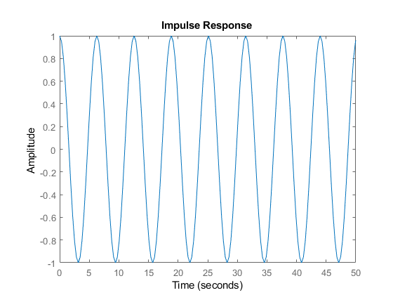
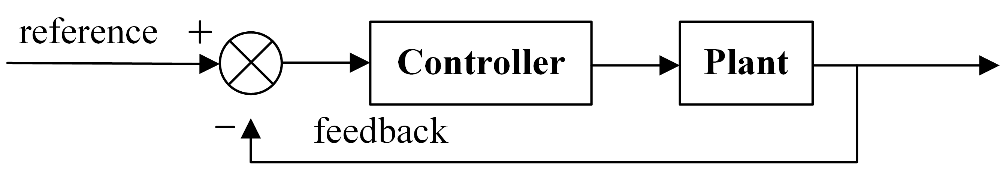

稳定性和振荡的频域理解
系统截止频率对应的相角与-180°相差的度数成为相角裕度，为何？
因为所谓相角裕度与增益裕度都是基于频域的控制系统稳定性指标。倘若系统的开环传递函数的截止频率相移为-180°，那么由于负反馈对于正弦波自带180°的相位滞后，那么对于系统而言就相当于正反馈，则系统将处于自激振荡状态。举个简单的例子，前向通道和反馈通道分别为积分环节:
|
|
可以看到，系统的脉冲响应是周期为6.28的正弦波，即当存在轻微扰动时，系统就会进入自激振荡状态（因为系统临界稳定）；而当系统的输入为0的时候，是输出也为0， 这可以理解为系统无能量输入，所以系统也就不会输出响应。想起模电中运用正反馈构成自激振荡电路的原理，实际工作环境中存在着能量的传播，所以自激振荡电路总能产生振荡的正弦波。理解这一点，对数稳定判据以及奈奎斯特稳定判据就很好理解了。

考虑下图显示的典型的反馈控制系统框图，如果将反馈处切开，那么从给定（Setpoint）到反馈的传递函数实际上就是自控概念中的开环传递函数了。

对于正弦信号而言，开环传递函数的幅频特性实际上反映的是反馈回来的信号的放大倍数（也可能是缩小）和相角延迟，这个和系统的稳定性有着密切的关系。如果反馈回来的信号为-180°，并且增益也比较大（大于等于1），那么系统就自然不会稳定。然而在实际系统中，由于功率（能量）的限制，噪声的影响，自激振荡这种状态就很好解释了。
毕竟开环传递函数研究的是反馈相当于系统给定的性质，把握了这句话，电工出身的人所说的环路增益研究系统稳定性就很好理解了。:)
- 原文作者：Hao Dong
- 原文链接：https://haodongnj.github.io/haodongnj/post/stability-in-frequency-domain/
- 版权声明：本作品采用知识共享署名-非商业性使用-禁止演绎 4.0 国际许可协议进行许可，非商业转载请注明出处（作者，原文链接），商业转载请联系作者获得授权。